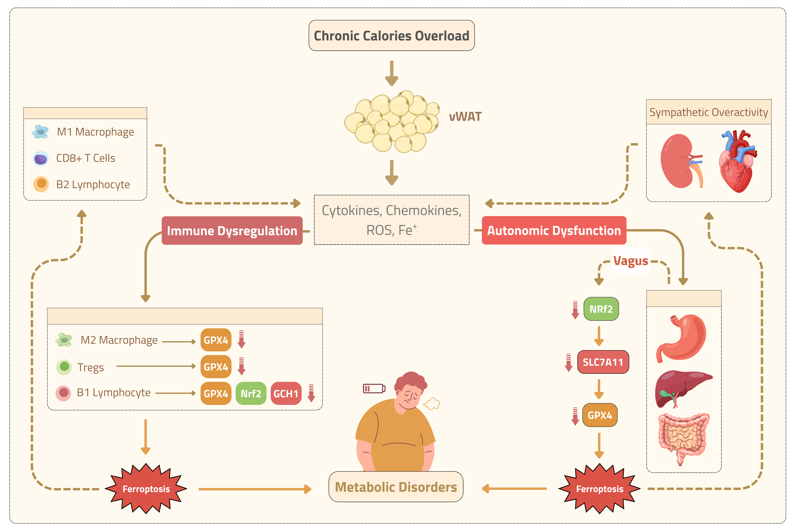

Professional Summary
Ahmed Massoud is a molecular biology graduate, ranked first in his major, and currently a full-time Teaching Assistant at the Faculty of Science, Alamein International University. He is also an ASRT MSc Research Scholar under the Scientists for Next Generation (SNG) Program. Alongside his academic background, he has a strong passion for bio-scientific illustration and visual science communication, aiming to simplify complex biological concepts through clear, accurate, and publication-ready figures.
Download CV
Education
MSc in Molecular Biology
2022-08-24
Alexandria University
BSc in Molecular Biology & Microbiology
2015-09-01 - 2019-07-30
Alexandria University
Interests
Professional Highlights
A selection of my recent activities
Integrating Single-Cell Sequencing and Proteomics to Unravel Stem Cell Heterogeneity
This review emphasizes the role of combined single-cell sequencing and proteomics approaches in decoding stem cell heterogeneity, offering advanced insights into cell fate decisions...
Harnessing Adipose Ferroptosis: A Promising Novel Pathway
This review summarizes the potential of targeting ferroptosis-iron-dependent lipid peroxidation-as a novel strategy for treating obesity and its metabolic complications...
Scientific illustrations Portofolio
Feel free to use my scientific illustartions for any academic purpose! Enjoy! 💙

Metabolic Disorders, Autonomic Immune Dysfunction, and Ferroptosis
Depicts the crosstalk between metabolic dysregulation, autonomic immune response...

Integrating Single-Cell Sequencing and Proteomics
Visual framework mapping single-cell RNA transcriptomics and proteomic profiling...

Vitamin D & Cellular Senescence Pathways
Molecular signaling cascade diagram outlining VDR anti-aging mechanisms...

Vertebrate Neuroanatomy: Brain & Spinal Cord
Anatomical and histological breakdown of vertebrate nervous system structures...

Epulopiscium: Giant Prokaryotic Bacteria
Visualization highlighting macro-bacterial cellular architecture and genome copy multiplicity...
Master's Thesis Research Schematics
Custom scientific schematics and experimental graphs from MSc research...
Biotechnology Lecture & Educational Visuals
Educational illustrations created for molecular biotechnology lectures...
Molecular Biology Laboratory Protocols
Step-by-step laboratory methodology flowchart for nucleic acid extraction & PCR...